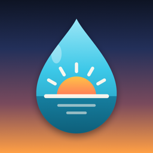

Wake & Water
Wake up. Then drink up.
What it does
- Alarms that ring through Silent mode and Focus, with wake-up missions (math, typing, shake, steps, barcode scan and more) so you actually get out of bed.
- A water tracker that starts with your first glass after waking, with smart reminders, challenges and a Home Screen widget.
- Optional Apple Health sync: saves the water and caffeine you log, and reads your sleep to show how long you slept.
Support
Questions, bug reports or feature requests: email nangnguyendev@gmail.com. We usually reply within two business days.
Frequently asked questions
My alarm didn't ring.
In the app, open Settings › Alarm didn't ring? for a step-by-step check. Wake & Water uses Apple's AlarmKit, so once alarms are allowed they ring even when your iPhone is locked, silenced or in a Focus.
How do I restore Wake & Water Pro?
In the app, open Settings and tap Restore purchases while signed in with the Apple ID you used to buy.
How do I cancel my subscription?
Open the Settings app on your iPhone, tap your name › Subscriptions › Wake & Water, then tap Cancel Subscription. You keep Pro until the end of the period you paid for.
How do I delete my data?
Your alarms, wake-ups and water log are stored only on your iPhone. Deleting the app deletes them. Water and caffeine already saved to Apple Health stay there; remove them in the Health app under Browse › Nutrition.
How do I change my ad privacy choices?
In the app, open Settings › Privacy › Privacy Choices. To change tracking permission, use Settings › Privacy › Tracking preferences.